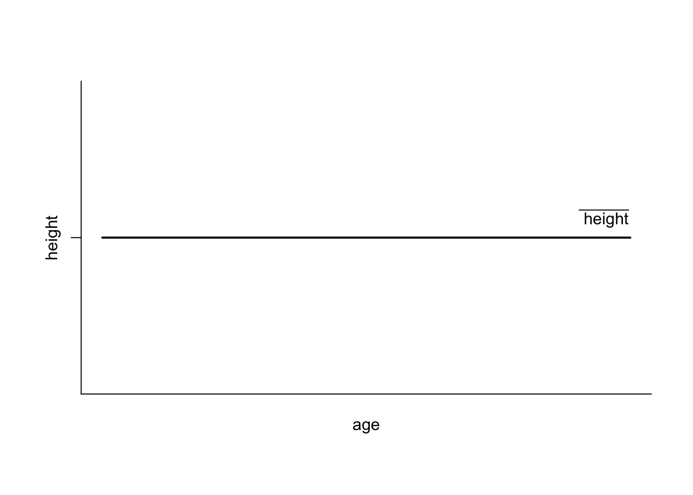
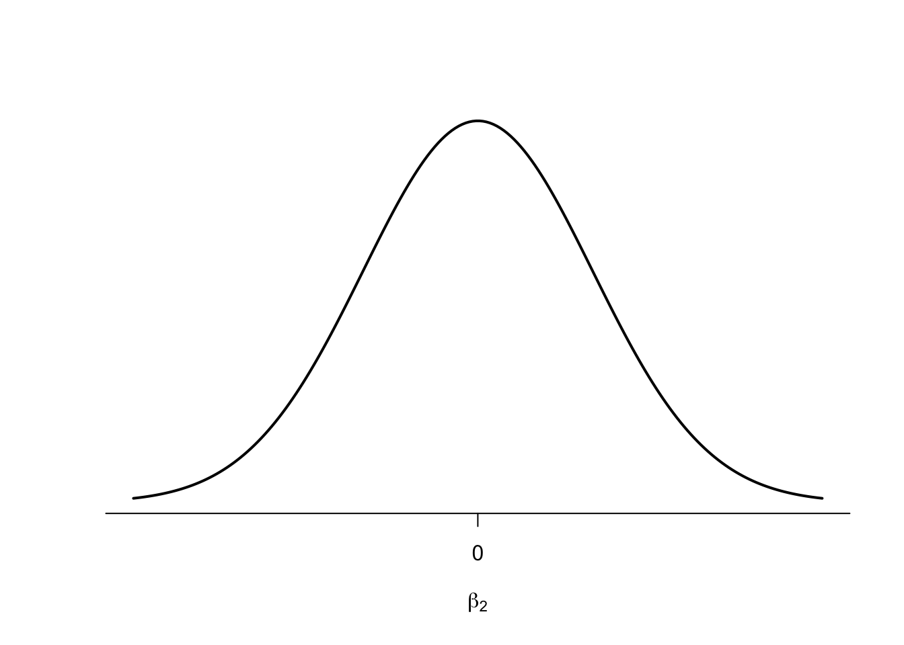

Linear Regression – Application
The Basic Command
The command to run a regression in R is beguilingly simple:
We specify an object into which we store the results of the regression, here regression, and assign a function to this object called lm which stands for “linear model”. It is then convention to state the dependent variable first in the command, which in our case will always be democracy. This is then followed by a tilde and the independent variable which you want to include.
In the case of modernisation theory, you might want to test what influence per capita GDP has on democracy. This week we are using the Polity V scale to measure democracy.
“The ‘Polity Score’ captures [the] regime authority spectrum on a 21-pont scale ranging from -10 (hereditary monarchy) to +10 (consolidated democracy). (…) The Polity scheme consists of six component measures that record key qualities of of executive recruitment, constraints on executive authority and political competition. It also records changes in the institutionalized qualities of governing authority.”2
We start by setting the working directory
and then load the Europe.csv data set into the workspace. We subset this data frame to observations from the year 2000, only.
europe <- read.csv("Week 2/Europe.csv")
library(tidyverse)
europe_2000 <- filter(europe, year == "2000")Our dependent variable is called polity. The independent variable is called gpdpc. We are now ready to run our first regression:
We can then produce a summary of the results as follows:
summary(reg_pol)
Call:
lm(formula = polity ~ gdppc, data = europe_2000)
Residuals:
Min 1Q Median 3Q Max
-14.1330 -0.6741 0.4742 1.4750 2.6515
Coefficients:
Estimate Std. Error t value Pr(>|t|)
(Intercept) 6.997e+00 7.859e-01 8.902 8.61e-10 ***
gdppc 1.068e-04 4.055e-05 2.635 0.0134 *
---
Signif. codes: 0 '***' 0.001 '**' 0.01 '*' 0.05 '.' 0.1 ' ' 1
Residual standard error: 2.973 on 29 degrees of freedom
(6 observations deleted due to missingness)
Multiple R-squared: 0.1932, Adjusted R-squared: 0.1654
F-statistic: 6.944 on 1 and 29 DF, p-value: 0.01336We can extract the number of observations used for the estimation by calling:
There is a lot of information in this, and I will take you through the output step by step now.
Interpreting the Output
The Number of Observations
Letl’s deal with the last step first. The number of observations is equal to the number of countries in this case. We have subset the data to the year 2000, and so we have 33 countries in the analysis. This seems trivial for now, but it will become important later on. Once observations are missing, R drops them from the analysis – especially in developing countries where data are often missing in large quantities this can lead to a rapid decimation in the number of observations. This in turn is problematic for the strength inference we can draw from the analysis.
The Intercept

R always shows the value for the intercept in the intuitively labelled row “(Intercept)” and the column “Estimate”. In this case the value is 7.0. What does this coefficient mean, substantively? When you remember the graph depicting the regression line, this is the point where the line intercepts the y-axis. So, it is the value of \(y\), here democracy in the form of the Polity V score, when \(x\), here economic development in the form of GDP, is zero. So in other words, a country with a GDP per capita of zero would achieve a Polity V score of 7. The substantive interpretation sometimes makes sense (like here), but sometimes cannot be interpreted in this way.
The Slope Coefficient

The slope coefficient is shown in the row depicting the name of the independent variable, here “gdp”, and again the column “Estimate”. Our slope here, is \(1.0681e-4\). The \(e-4\) means that we have to move the decimal point 4 units to the left, so written fully, this means \(0.0001068\). We interpret it as follows: for every additional unit of per capita GDP, measured in US$, the Polity V score increases by \(0.0001068\), on average. This seems very small, but when you consider the size of GDP per capita in many countries, it seems logical that this value is as small as it is. If the coefficient was negative, then this would mean that for for every additional unit of per capita GDP, measured in US$, the Polity V score would decrease by \(0.0001068\), on average.
The all-important p-value in Regression
Everybody is obsessed with the p-value in quantitative research, but what does it mean in this context and where can you find it? You will have watched the video on the p-value more generally. If you haven’t, or have forgotten what it says, watch it now before reading on.
First things first: how do we interpret the p-value for regression? We do a regression in order to ascertain whether there is a relationship between the independent and the dependent variable, or not. For testing whether there is one, we start from the assumption that there is none. This is what we call the null hypothesis; in our example here it would be that per capita GDP does not influence the level of democracy in a country.
Now, remind yourself of the normal distribution from the video which has the mean age in its centre. In the video we were interested whether age influences height. Assuming, that there is no relationship between age and height, a regression line would look as follows:

The line is perfectly flat (the slope coefficient is zero), intercepting the y-axis at the mean. This means, that for every age we expect the same height, so on average we are always right. If we now put a zero slope coefficient, such as the one for height, just in the more general form of \(\beta_{2}\) in the centre of a normal distribution, it looks like this:

What we want to test now, with regression, is whether the slope coefficient R has calculated for us (let me denote the estimated value of \(\beta_{2}\) as \(\hat{\beta_{2}}\)), is far enough from this mean of zero, to say that we can be sure to say that there is a relationship.
The statement that there is a relationship between the independent and the dependent variable, is called the alternative hypothesis. In our case the alternative hypothesis would read: “The level of per capita GDP influences the level of democracy in a country”.
So how far away from the centre of zero do we have to go to say that there is indeed relationship, or put differently, that our alternative hypothesis is true? The standard in political science is that we need to have a 5% probability of finding a value more extreme than the one we have observed. Under the curve in the following graph, that is equal to the blue area on the right. And that is the p-value.

If this area is 5% or less, then we have observed a value for the slope coefficient which is so far away from our assumed mean of zero, that we have sufficient evidence to reject the null hypothesis, and to accept the alternative hypothesis.
But now, you might say, a slope coefficient can also be negative – here we are only looking at the right hand-side, and therefore at the scenario in which a slope coefficient is positive. And you are right. The scatter plot could give us a negative line. So, if we want to move away far enough from the assumed mean of zero in the centre, we must do so in both directions, to the left and to the right. Now, we need a value that is so far out, that to either side of the distribution, 2.5% of the area are left under the curve (2.5% on the left plus 2.5% on the right make the overall 5% we are interested in). We call this a two-sided test, whereas the scenario above is a one-sided test. The p-values reported by R for the slope coefficients are always two-sided tests (unless we tell R not to, but we are not doing that on this module). This value gives us the area under the normal distribution to the left and the right beyond our observed value, as shown in this figure:

The value we are looking at in R to determine the p-value, is in the column \(Pr(>|t|)\).

In order to satisfy the requirement of the p-value being 5% or less, this value needs to be smaller than 0.05. Otherwise, more than 5% area are left, and we are not certain enough that our value is far enough away from the zero mean in the centre to say that it is “statistically different” from it. When we look at the value for the slope coefficient gdppc here, \(0.0134\), this means that the areas on the left and the right are jointly 1.34% – small enough for us to be sure to have found a value that is far enough away from zero to claim that there is a relationship. We therefore reject the null hypothesis, and accept the alternative hypothesis: we find evidence for a relationship between per capita GDP and Polity V in Europe in the year 2000. Again, if we want to visualise this, the actual p-value of \(0.0134\) would look like this:

The Goodness of Fit (R-Squared)

Recall from the video that the goodness of fit is a measure to indicate how much of the variation in the dependent variable (democracy) the independent variable (per capita GDP) is explaining. For this, we take the ratio of the explained sum of squares over the total sum of squares. The resulting percentage is R-Squared. This number can also be found on the R output, and is in our case \(0.1932\), or 19.32%. This value is not too bad for a single variable! The maximum we can explain is of course 100% with an R-Squared value of 1.0, even though this is a dream never achieved empirically. But we are stil quite some distance of this dream, and can probably do better. There surely must be factors other than per capita GDP that explain democracy in Europe in the year 2000.
Choosing Variables
Can I choose more than one independent variable?
Yes, you can! And this is where the fun starts, because now we are getting a step closer to the real world. New modernisation posits that democracy is multi-causal, and does not rest on the influence of GDP alone. Instead, it puts forward a number of concepts that act as independent variables, one of which is health. We can measure health through Hospital beds (per 1,000 people), and include this in our model, on top of GDP. To do this we type:
You see that adding independent variables is easy, we just add them on with a plus sign. It does not matter whether the expected direction of influence is positive or negative, always add additonal variables with a “+”. The command ought to lead to the following output:
summary(reg_pol1)
Call:
lm(formula = polity ~ gdppc + hospital, data = europe_2000)
Residuals:
Min 1Q Median 3Q Max
-11.0906 -0.4154 0.2112 1.4259 3.5517
Coefficients:
Estimate Std. Error t value Pr(>|t|)
(Intercept) 1.134e+01 1.903e+00 5.959 2.05e-06 ***
gdppc 7.668e-05 3.934e-05 1.949 0.0614 .
hospital -5.828e-01 2.361e-01 -2.469 0.0199 *
---
Signif. codes: 0 '***' 0.001 '**' 0.01 '*' 0.05 '.' 0.1 ' ' 1
Residual standard error: 2.742 on 28 degrees of freedom
(6 observations deleted due to missingness)
Multiple R-squared: 0.3374, Adjusted R-squared: 0.2901
F-statistic: 7.13 on 2 and 28 DF, p-value: 0.003142Ceteris Paribus
Let us focus on the coefficient for hospital beds first. Its value is rounded \(-0.5828\), implying that for every additional hospital bed per 1,000 people, the Polity V score decreases by \(0.5828\) units on average. So far, so good, but as we have included other variables in the regression model, namely per capita GDP, we need to account for this fact in our interpretation. We do this by adding “all other things being equal” (Latin: ceteris paribus) to this interpretation. What does this mean? It means, that if we take into account the level of per capita GDP, and hold this level constant, then for every additional hospita bed, the Polity V score decreases by \(0.5828\) units on average.
As such, we force the regression model to isolates the effect of hospital beds by including other possible explanatory factors, such as per capita GDP. You will sometimes read this in articles in the form of “controlling for”. To give you a different example: suppose we want to find out whether sex influences income. We could simply run a regression with income as the dependent variable, and sex as the independent variable. But we also know, that age influences income, as with increasing age people have more experience which is reflected in their salary. So even though we are not interested in the amount age influences income, we would include it in the regression model, so as to isolate the effect of the variable we are interested in: sex.
Back to our modernisation example and life expectancy. The p-value for this coefficient is \(0.0199\), and therefore well below the required 5% threshold. We can conclude that the number of hospital beds influence the level of democracy in Europe in the year 2000. Per capita GDP is rendered insignificant, however.
Parsimony
But can you just add independent variables at your leisure? The short answer is no. The long answer is: parsimony. This means “as few as possible, as many as necessary”. The “necessary” component is guided by the theoretical underpinning of your investigation. For example, you subscribe to new modernisation theory, and believe that that it is not only economic development in the form of per capita GDP that determines the level of democracy, but that indicators of social change also play an important role. Now it is your job as a researcher to decide how we measure social change. Do we include education? And if so, how do we measure it, say by literacy levels? Should we choose a different measure for health that measures it more directly than hospital beds? Then we might decide on life expectancy. But are these two enough to measure social change, or do we need to look at other facets? We seek to include as few as possible to produce an empirical picture of social change, but so many that we are doing proper justice to the theory.
We can then proceed to test different scenarios. For example, does economic development already explain democracy? What happens if we add social change? Or does social change explain democracy on its own, already? These questions lead to the topic of “model specification”, which we will discuss in greater detail in week 4.
R-Squared Again
As soon as we introduce more than one independent variable to the model, we cannot use “Multiple R-Squared” any more. The reason is that this measure cannot properly take into account added variables. It will either stay the same, or increase, it cannot decrease. This of course, makes no sense, for example if we add average shoe size in 2000 to the analysis, this would not help to explain democracy, but Multiple R-Squared would still likely go up. We therefore need to new measure, calles “Adjusted R-Squared” which not only penalises us for adding more indepenent variables, but will also decrease if a variable takes explanatory power away from a model. You find it here:

For more detail see .↩︎